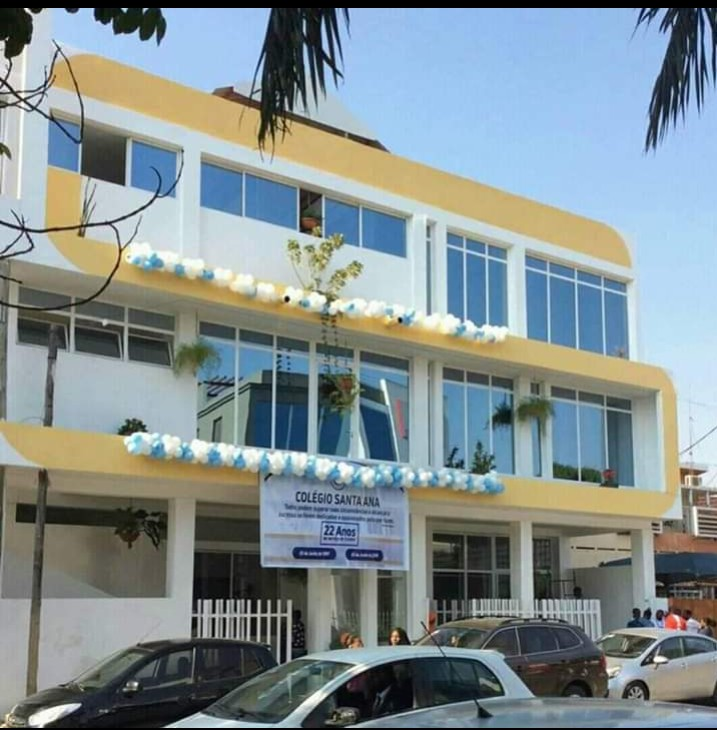

Destaque

FESTAS FELIZES
O colégio SANTA ANA E NOESA, deseja a todos os estudantes e encarregados um feliz natal e próspero ano novo.
Leia MaisAtualizações
Noticias Globais
Brasil Campeão do Mundo!
O Brasil venceu a Copa do Mundo!